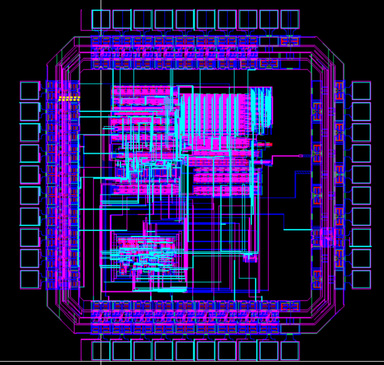

Hello! I'm Andrew, currently a senior Computer Engineering student at the University of Notre Dame. I'm passionate about exploring and understanding computers all the way from the transistor level up to the highest reaches of high-level programming languages.
I have experience in frontend and backend development, C and C++ programming, scripting in Python and Bash, VLSI and FPGA design, and much more.
I collaborated with a team of interns and software engineers to produce a new web-based shipment tool, working as a full-stack developer to build the tool from the ground up. Primarily, I assisted with front-end development via Typescript, React, and CSS, and utilized Gitlab, Kubernetes, and Docker to build and deploy the service with CI/CD pipeline.
Working with the engineering team, I created a prototype Android tablet app to interface with scanner device using Bluetooth Low Energy connection, and tested Bluetooth protocols in both the app code and the device code for best functionality between the two. I was also given the opportunity to participate in weekly engineering meetings with the team to discuss the company's engineering future and ideas.
I worked with local management to create an initial idea, then over the course of the summer I designed, developed, and helped to implement an Android app to quickly and intuively produce custom labels and wirelessly communicate with a thermal label printer to print the created labels. Over the course of the project, I was able to frequently check in with the management and adjust the app based on their feedback.
In this role, I performed several tasks to aid the overall efficiency of the production team. I utilized C and PHP to adapt several web-based tools into executable programs to assist the QA process, spent time working with the team to produce parts myself, and then used that experience and their feedback to draft redesigned production guidelines for one part of the process, which would almost double the team's output speed for that part.
GPA: 3.44
In my time at Notre Dame, I've taken classes in Data Structures, Systems Programming, Computer Architecture, and Operating Systems in the Computer Science-focused domain, and classes in DC and AC Circuit Analysis, Electronics, and Logic Design for the Electrical Engineering-focused side of my major, along with Computer Architecture and VLSI Circuit Design, which blurred the line between the two.
GPA: 4.3
ACT: 36
When it's time to get out of the classroom / out of the office, my interests usually involve the outdoors in various ways. Growing up in Colorado of course gave me a love for skiing and snowshoeing in the winter months, and in summer I'm an avid mountain biker and hiker, and I love to dabble in climbing, paddleboarding, kayaking, and wakesurfing.
I also have a passion for basically any form of culinary creation, whether that's cooking, baking (especially bread!), or various ways to make coffee, and I've recently begun trying my hand at brewing my own beer, with promising results.
Finally, my most long-running "hobby" is practicing martial arts. I began learning Taekwondo in the ATA system when I was around 8 years old, and continued practicing that style up through high school, eventually reaching the level of 3rd Degree Black Belt. In the course of those 12 years of training, I learned
As far as personal projects go, my most fun would be this Arduino-based punch-activated flamethrower that I created over the spring of 2020, while at home taking online classes. I was inspired by an old DIY video I saw online, and did my best to re-create the design and actually be able to punch fireballs. It's still one of my go-to cool stories/fun facts to talk about!
For the final lab/project of my VLSI circuit design class, I worked with a small group to finalize the design of a complete microcontroller, assembling the blocks which were made in previous stages of the project into a complete chip schematic in Cadence Virtuoso, connecting the components in layout, verifying the chip with simulation, DRC, and LVS, and finally performing tapeout in GDS format and verifying the GDS. All steps went through without errors, and we were able to create a complete GDSII file and all the information theoretically needed for a foundry to produce the chip.
